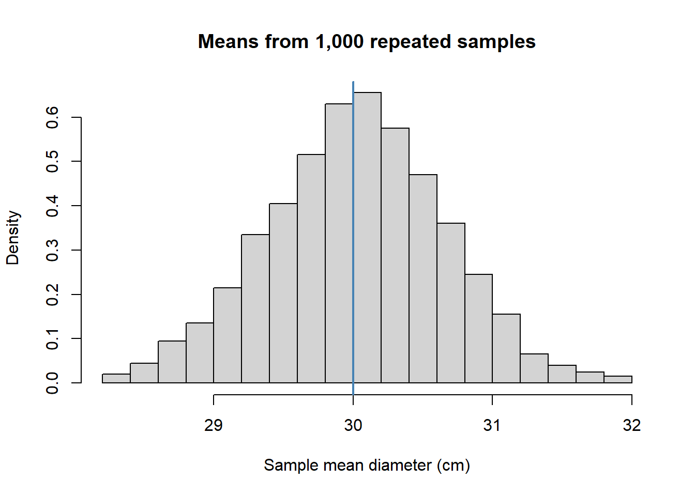

Two groups measure different samples of trees and report different average diameters. Neither group has necessarily made a mistake: sampling alone causes estimates to vary. To interpret either result, we need a measure of its uncertainty.
We first make this uncertainty visible by repeating the sampling process. We then ask a second question: how can a distributional model help us choose an estimate in the first place?
TipWhat you should know alredy
You can differentiate between population and sample.
You understand the concept of a random variable and its distribution.
You know how to draw random nimbers from a distribution.
TipLearning objective
By the end of this unit, you can distinguish standard deviation from standard error, explain expectation and unbiasedness across repeated samples, and describe what is held fixed and what varies in a likelihood function.
2.2 Content
2.2.1 Repeating the study
We keep the same population model as before: tree diameters have mean 30 cm and standard deviation 2 cm. Each simulated study measures ten independent trees. We repeat the study 1,000 times and retain one mean from each study.
set.seed(2)mu <-30sigma <-2n <-10n_sim <-1000sample_means <-replicate(n_sim, mean(rnorm(n, mean = mu, sd = sigma)))hist(sample_means, probability =TRUE, breaks =25,main ="Means from 1,000 repeated samples",xlab ="Sample mean diameter (cm)")abline(v = mu, col ="steelblue", lwd =2)

Each value in this histogram is an average of ten measurements. It is not an individual tree diameter. The histogram approximates the sampling distribution of the mean: the distribution we would obtain by repeatedly applying the same estimator to new samples of the same size.
For independent normal observations, the sample mean has an exactly normal distribution. With many other population distributions, the central limit theorem gives a normal approximation for sufficiently large samples, provided its conditions hold.
2.2.2 Centre: what does unbiasedness mean?
An estimator is unbiased when its expected value over repeated sampling equals the parameter being estimated. For the sample mean,
The simulated average should be close to 30 cm. It need not equal 30 exactly because we simulated a finite number of studies. Unbiasedness does not mean that every estimate is correct. It means that the estimator has no systematic overestimation or underestimation under the stated sampling model.
2.2.3 Spread: standard deviation versus standard error
The standard deviation describes variation among individual observations. The standard error describes variation of an estimator across repeated samples.
For independent, identically distributed observations with finite variance, the standard error of the mean is
Both results are measured in centimetres, but they answer different questions. The first describes differences between trees. The second describes the uncertainty of their estimated population mean. The standard error is not a test of whether the population is normally distributed.
Increasing the sample size does not reduce the variation between individual trees in the population. It reduces uncertainty about their mean. To halve the standard error, we need four times as many independent observations. Collecting more observations also does not automatically remove bias caused by a poor sampling design.
CautionPredict before calculating
If each study measured 40 trees instead of ten, what would happen to the spread of the simulated means? Change n, rerun the simulation and compare the result with your prediction.
2.2.5 From a model to an estimate: likelihood
So far we have used the arithmetic mean as an estimator. Maximum likelihood provides a general principle for selecting parameter estimates from a model.
For independent observations \(x_1,\ldots,x_n\) from a density \(f(x\mid\theta)\), the likelihood is
\[L(\theta)=\prod_{i=1}^{n}f(x_i\mid\theta).\]
The observations are now fixed. We vary the unknown parameter \(\theta\) and compare how well different parameter values account for these observations. The likelihood is a function of the parameter, not a probability distribution over possible parameter values. For continuous observations, its factors are densities; for discrete observations, probability masses play the same role.
For a first illustration, suppose the population standard deviation is known to be 2 cm. We compare three candidate means for our observed sample.
We sum log densities rather than multiply densities. The logarithm turns products into sums and avoids numerical underflow. Because it is strictly increasing, the log-likelihood has the same maximiser as the likelihood. Larger values indicate better support among the candidate values under this model; negative log-likelihood values are perfectly normal.
Comparing three candidates is only a first step. In the next unit we search over all possible means and show why the optimum is the arithmetic mean.